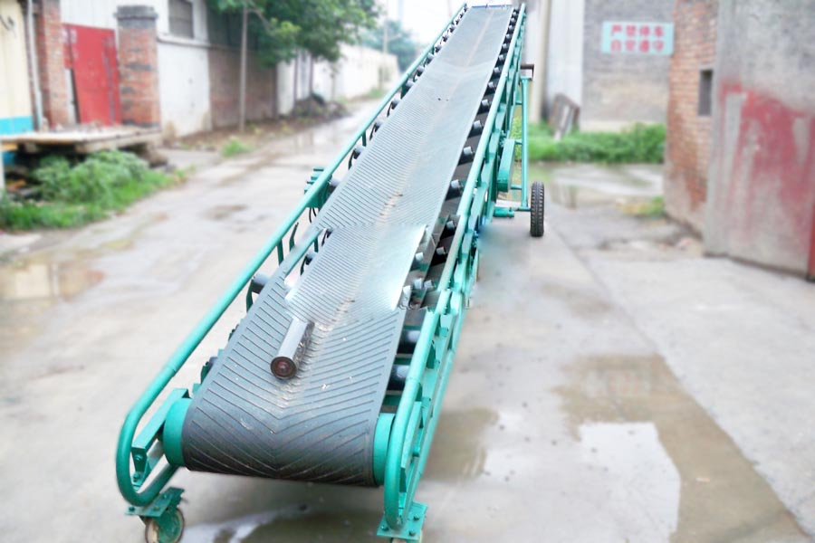
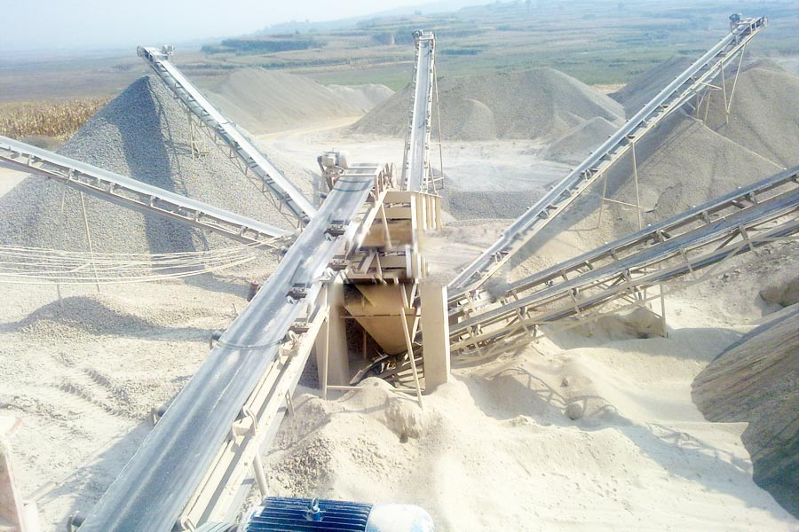

- Home >
- feeding screening >
- belt conveyors

Construction waste crushing production line

Mobile construction waste crushing station for urban construction waste crushing.
belt conveyors
Belt Conveyor Products
Conveyor is a friction drive for material transport in a continuous manner machinery, mainly from the rack, conveyor belt, roller, roller, moving equipment and other components. It can transport the material in a certain line, the feed point from the initial to the final discharge point between the formation of a material transport process.

The main purpose of the belt conveyor
It can be used for horizontal or inclined transportation transport, easy to use, widely used in modern industrial enterprises, such as: the mine’s underground tunnel, mine ground transportation systems, open pit and concentrator. According to transportation technology requirements, single delivery, it can also composed of multiple components or with other transportation equipment horizontal or inclined transportation system to meet the different types of operating line arrangement needs.
Structure belt conveyor
Belt conveyor mainly from the rack, conveyor belt, belt roller, tensioning devices, drives and other components. The body is made of high quality steel connection, the front and rear legs of the height difference frame, the plane was tilted at an angle. Equipped with a belt roller frame, roller, etc., used to stimulate and support the conveyor belt. There geared motor drive and electric drum driven in two ways.
Belt Conveyor Technical Data
| Belt width (mm) | Length(m) | Power （kw） | Length (m) | Power（kw） | Length (m) | Power （kw） | Belt speed (m/s) | Capacity(t/h) |
| 500 | ≤12 | 3 | 12-20 | 4-5.5 | 20-30 | 5.5-7.5 | 1.3-1.6 | 78-91 |
| 650 | ≤12 | 4 | 12-20 | 5.5 | 20-30 | 7.5-11 | 1.3-1.6 | 31-323 |
| 800 | ≤6 | 4 | 6-15 | 5.5 | 15-30 | 7.5-15 | 1.3-1.6 | 278-546 |
| 1000 | ≤10 | 5.5 | 10-20 | 7.5-11 | 20-40 | 11-22 | 1.3-2.0 | 435-853 |
| 1200 | ≤10 | 7.5 | 10-20 | 11 | 20-40 | 15-30 | 1.3-2.0 | 655-1284 |
| 1400 | ≤10 | 7.5 | 10-20 | 11 | 20-40 | 15-30 | 1.3-2.0 | 655-1284 |
| 1600 | ≤10 | 7.5 | 10-20 | 11 | 20-40 | 15-30 | 1.3-2.0 | 655-1284 |

Features belt conveyor
Coal mine belt conveyor is ideal efficient continuous transport equipment, compared to other transport equipment (such as locomotive class), it has the advantage of long distance transportation, large volume, continuous delivery, etc., and reliable operation, easy to automate and centralize control , especially for high-yield and efficient mine, conveyor has become the coal mining technology and equipment, electromechanical integration key equipment. The main feature is the belt conveyor body can easily scalable, feature stocker warehouse, with the propulsion tail can elongate or shorten the coalface, compact, not to set the foundation, laid directly on the roadway floor, machines lightweight frame, disassembly is very convenient. When the transmission capacity and transport distance is large, it can be equipped with intermediate drives to meet the requirements. According to transportation technology requirements, single delivery, but also multi-level synthesis unit or inclined transportation system to transport materials.
Leave Me A Message, Now
If you have any questions regarding equipment prices, production line configuration or other problems, you can send a message to us, we will contact you soon.